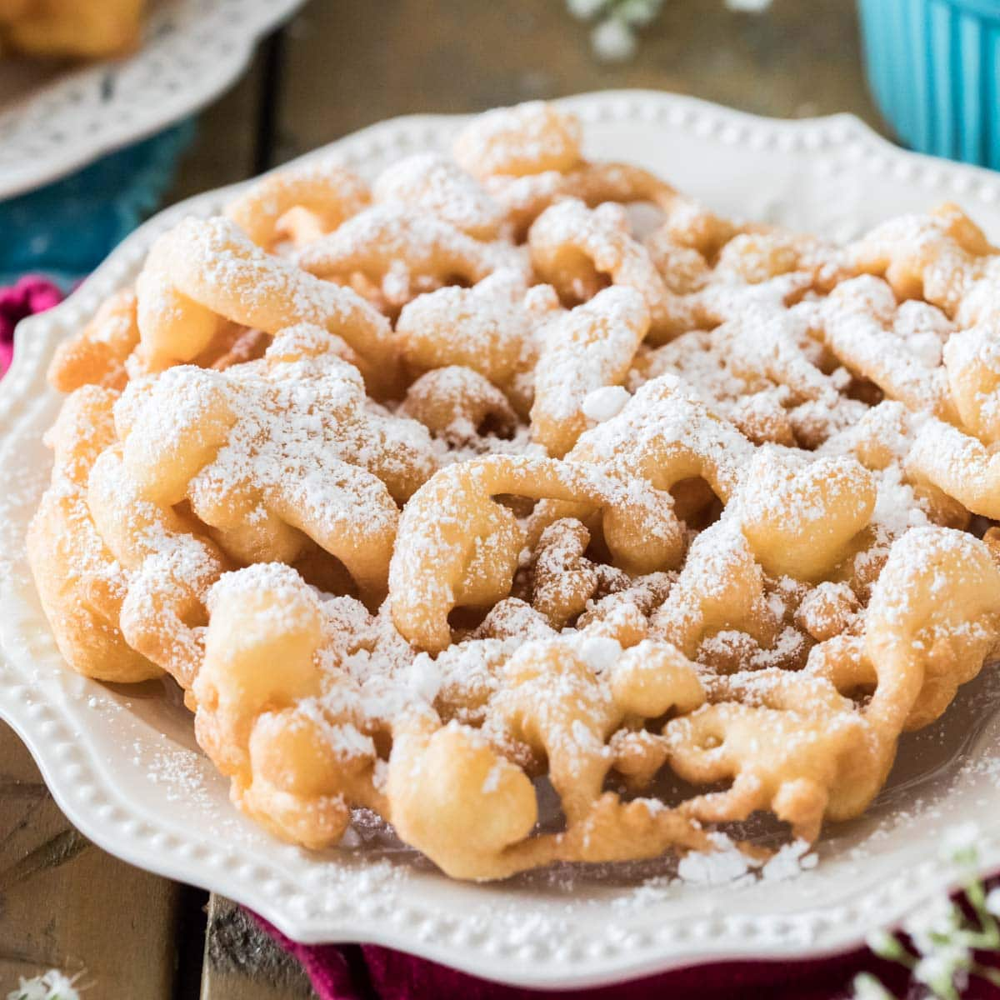

Funnel Cake

Description
Funnel cake is a dessert that is popular at carivals, fairs, and amusement parks! It is essentially fried pancake batter with powdered sugar.
Ingredients
- 1 quart vegetable oil for frying, or as needed
- 1 ½ cups milk
- 2 large eggs
- 2 cups all-purpose flour
- 1 teaspoon baking powder
- ½ teaspoon ground cinnamon
- ½ teaspoon salt
- ¾ cup confectioners' sugar
Steps
- Heat oil to 375 degrees F (190 degrees C) in a heavy skillet.
- Beat milk and eggs together in a large bowl. Combine flour, baking powder, cinnamon, and salt in a separate bowl; stir into egg mixture until smooth.
- Use your finger to cover the funnel hole; pour in 1 cup of batter. Starting in the center of the skillet, remove your finger and move the funnel in a swirling motion to make 6- or 7-inch round. Fry in hot oil until golden brown all over, about 1 minute per side. Drain on paper towels. Continue cooking remaining batter.
- Sprinkle with confectioners' sugar and serve warm.